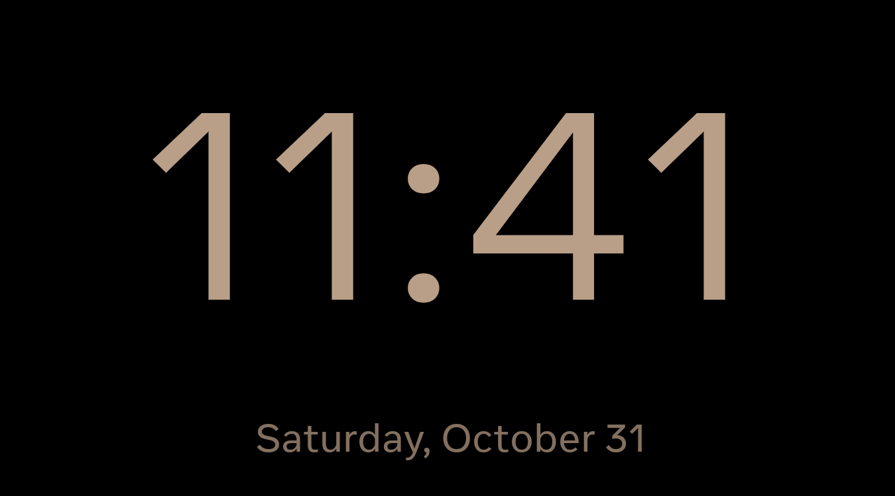

Recorded from the production accessibility overlay on the actual Android 10 Portal. Photos fade into the warm clock and back to the same photo. This excerpt shows rendered content; a screen recording cannot show the panel’s actual backlight dimming.
| Brightness command ramp | Observed duration | Intermediate values |
|---|---|---|
| Dark entry | 3.009 s | 17 |
| 3% → 15% | 2.976 s | 17 |
| 15% → 3% | 2.965 s | 17 |
| Registered night-mode disable | 2.960 s | 17 |
| Second dark entry | 2.982 s | 17 |
Both photo and night-clock taps revealed the same pinned Files window and process. The photo region matched exactly after return. Time, weekday and date are visible in the native capture below. All 97 settings and 22 source fields were restored, and the original screensaver is running again.

Physical verification receipt · Actual Family Area music captures · Earlier native design review